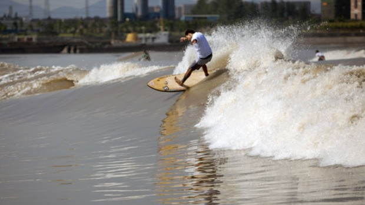

Surfe na pororoca para 100 mil chineses
O evento foi grandioso e atraiu um público de mais de 100 mil pessoas ao longo da margem do rio chinês. Segundo Laus, o primeiro desafio não foi só surfar na maior pororoca do mundo, com velocidade de até 40 Km/h, mas enfrentar a burocracia da nação oriental.
São várias exigências do governo chinês. Lá eles são muito burocráticos, cheio de regras. Tivemos que assinar termos de responsabilidades, isentando eles em caso de morte, para daí entrar e quando entravámos eles diziam que só poderíamos surfar de tal ponte até tal lugar. Não pode surfar muito próximo da margem, tendo que manter uma distância de 70 Km – conta o paranaense.
Acostumado a surfar na pororoca brasileira, em plena selva amazônica, Laus viveu uma situação totalmente diferente: a urbanização. Ao invés de tomar cuidado com troncos, o risco era com pedaços de concretos lançados no rio ou com os inúmeros deques construídos para conter a força da água.

Serginho Laus quer recuperar o recorde mundial de surfe na pororoca
O paranaense que acaba de voltar da China, se prepara para bater a marca do inglês Steven King e avisa: 'os caras não vão mais me alcançar'
O paranaense Serginho Laus não para. Pioneiro em surfar na pororoca brasileira, no Amapá, aos 31 anos, já bateu dois recordes mundiais, acabou de voltar de uma expedição na China e agora quer recuperar a marca mundial perdida para o inglês Steve King, que percorreu 15 quilômetros na Servern Bore, a pororoca da Inglaterra. A data está marcada para fevereiro, mas o local ainda não. Laus conta que planejava tentar o novo recorde no Amapá, mas recebeu um convite chinês de voltar ao rio Quintang, na China. A confiança que Laus tem em reconquistar o recorde está no fato de já ter feito uma marca bem superior às oficiais. Em um treino não registrado, ele já surfou 23 quilômetros. A pororoca é fenômeno que ocorre quando o mar invade os rio, gerando ondas contínuas. - Agora sei que dá. No ano que vem, vou para cima para tentar chegar nessa marca e trazer o recorde para cá. Se passar de 20 quilômetros, os caras não conseguem mais me alcançar, principalmente lá na Inglaterra. Há uma semana, Laus estava na China. O desbravador das ondas marítimas que adentram os rios participou do Silver Dragon, pororoca chinesa, no rio Quintang na cidade chinesa de Hangzhou. Junto com os brasileiros Chlóe Calmon e Everaldo “Pato” Teixeira, eles representaram o país ao lado dos colegas americanos Robert Wingnut, Mary Osborne e Curren Capples.
O paranaense que acaba de voltar da China, se prepara para bater a marca do inglês Steven King e avisa: 'os caras não vão mais me alcançar'
O paranaense Serginho Laus não para. Pioneiro em surfar na pororoca brasileira, no Amapá, aos 31 anos, já bateu dois recordes mundiais, acabou de voltar de uma expedição na China e agora quer recuperar a marca mundial perdida para o inglês Steve King, que percorreu 15 quilômetros na Servern Bore, a pororoca da Inglaterra. A data está marcada para fevereiro, mas o local ainda não. Laus conta que planejava tentar o novo recorde no Amapá, mas recebeu um convite chinês de voltar ao rio Quintang, na China. A confiança que Laus tem em reconquistar o recorde está no fato de já ter feito uma marca bem superior às oficiais. Em um treino não registrado, ele já surfou 23 quilômetros. A pororoca é fenômeno que ocorre quando o mar invade os rio, gerando ondas contínuas. - Agora sei que dá. No ano que vem, vou para cima para tentar chegar nessa marca e trazer o recorde para cá. Se passar de 20 quilômetros, os caras não conseguem mais me alcançar, principalmente lá na Inglaterra. Há uma semana, Laus estava na China. O desbravador das ondas marítimas que adentram os rios participou do Silver Dragon, pororoca chinesa, no rio Quintang na cidade chinesa de Hangzhou. Junto com os brasileiros Chlóe Calmon e Everaldo “Pato” Teixeira, eles representaram o país ao lado dos colegas americanos Robert Wingnut, Mary Osborne e Curren Capples.
|
31/10/2007
Previsão é para a etapa brasileira do WCT só ser iniciada na sexta
31/10/2007
Festas agitam o WCT em Imbituba 21/10/2007 |